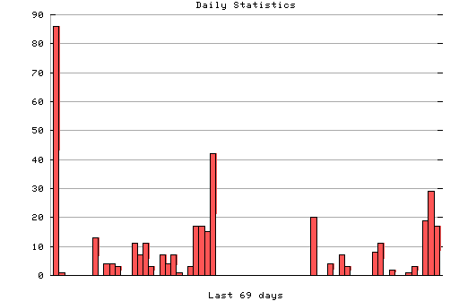

HTTP Server Daily Statistics
Covers: 08/07/95 to 10/14/95 (69 days).
All dates are in local time.
08/07/95 (Mon): 86 : ######### 08/08/95 (Tue): 1 : 08/14/95 (Mon): 13 : # 08/16/95 (Wed): 4 : 08/17/95 (Thu): 4 : 08/18/95 (Fri): 3 : 08/21/95 (Mon): 11 : # 08/22/95 (Tue): 7 : # 08/23/95 (Wed): 11 : # 08/24/95 (Thu): 3 : 08/26/95 (Sat): 7 : # 08/27/95 (Sun): 4 : 08/28/95 (Mon): 7 : # 08/29/95 (Tue): 1 : 08/31/95 (Thu): 3 : 09/01/95 (Fri): 17 : ## 09/02/95 (Sat): 17 : ## 09/03/95 (Sun): 15 : ## 09/04/95 (Mon): 42 : #### 09/22/95 (Fri): 20 : ## 09/25/95 (Mon): 4 : 09/27/95 (Wed): 7 : # 09/28/95 (Thu): 3 : 10/03/95 (Tue): 8 : # 10/04/95 (Wed): 11 : # 10/06/95 (Fri): 2 : 10/09/95 (Mon): 1 : 10/10/95 (Tue): 3 : 10/12/95 (Thu): 19 : ## 10/13/95 (Fri): 29 : ### 10/14/95 (Sat): 17 : ##

Statistics generated at Mon Oct 16 10:19:56 MET 1995, (C) Oslonett AS, 1995.